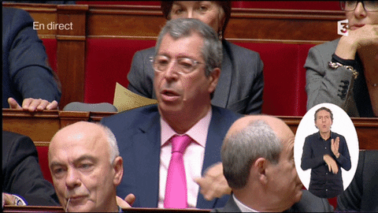

| POLITIQUES | CITATIONS | CONTEXTE | EXTRAIT |
|  Les Balkany |
Grain de riz |
À Levallois Perret, un employé de la mairie a pour mission de masser Isabelle Balkany et d'être aux ordres de l'adjointe au maire. Son surnom "Grain de riz". |
|
Nicolas Sarkozy |
Casse-toi, |
Alors qu'il visite le Salon de l'agriculture le 23 février 2008, Nicolas Sarkozy serre de nombreuses mains dans l'assistance. |
|
Nettoyer au Kärcher |
Cette phrase a été prononcée par Nicolas Sarkozy le 19 juin 2005, dans la cité des 4.000 à la Courneuve, après la mort de Sid-Ahmed Hammache, un enfant de 11 ans tué d'une balle au bas de son immeuble, victime d'une rixe entre deux bandes. | ||
Emmanuel Macron |
C'est de la poudre de perlimpinpin |
Lors du débat de l’entre-deux tour de l’élection présidentielle, Emmanuel Macron avait ressorti cette fameuse expression de derrière les fagots | |
La meilleure façon de se payer un costard c'est de travailler |
En déplacement dans la ville de Lunel où il rencontrait de jeunes élèves d'une école du numérique,le ministre de l'Économie a eu un vif échange après que deux hommes l'ont pris à partie dans les rues de la ville à propos de la loi travail | ||
Marine Le Pen |
Ils sont là, dans les campagnes, les villes... |
Au cours du débat de l'entre-deux-tours pour l'élection présidentielle de 2017 entre les candidats Emmanuel Macron et Marine Le Pen. Victime de son impréparation et d'une stratégie trop agressive, la candidate d'extrême droite a scellé ce soir-là sa propre défaite | |
Nadine Morano |
Je ne suis pas raciste, ma meilleure amie est encore plus noire qu'une arabe |
Nadine Morano refait parler d'elle. Après avoir affirmé à la veille du second tour des législatives qu'elle partageait "les mêmes valeurs" que les électeurs du FN, l'ancienne députée et ministre UMP a tenté de préciser sa position vis-à-vis du parti de Marine Le Pen, jeudi 21 juin sur France 5. | |
François Hollande |
Be you, be proud of you because you can be do what we want to do |
François Hollande s'essaye à l'anglais... sans trop de succès ors d'un discours devant une assemblée aux Philippines | |
Eric Zemmour |
Le doigt d'honneur |
En déplacement à Marseille, samedi 27 novembre 2021, Éric Zemmour a dérapé en échangeant un doigt d'honneur avec une passante |